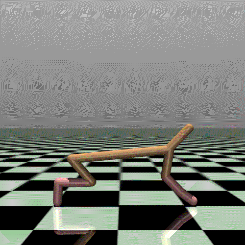
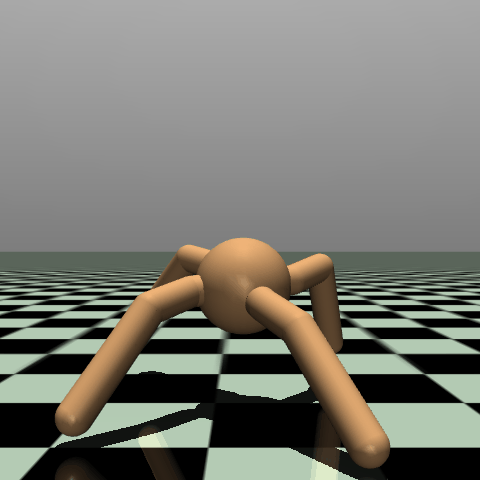

Visualizing Behavioural Traits of Quality-Diversity Algorithms with Natural Language Queries
1. Background
In Reinforcement Learning, we're often interested in the best performing solution of a task domain. But understanding the entire fitness landscape of different strategies is equally informative. Quality-diversity algorithms are a reinforcement learning methodology which aim to solve a task domain with a population of diverse solutions instead of a single best-performing solution.
In this paper, we look at one particular instance of a Quality-Diversity algorithm, CMA-ME. Which combines two earlier predecessor works, CMA-ES, a famous blackbox optimization algorithm and the other MAP-Elites, which archives individuals in a population by their behavioural characteristics. In this combination, CMA-ME, uses CMA-ES to optimize a neural network to find competitive policies (methods of interacting with the environment) to optimize the reward achieved and CMA-ME uses MAP-Elites to archive the best performing solutions by their behavioural characteristics, such that a diverse set of strategies are
2. Problem Statement
In this paper, we make a novel contribution of combining the fitness landscape found by the CMA-ME algorithm and we bolt on natural language processing capabilities in order to analyze the strategies found. This contribution serves two purposes. First, since the behavioural space is often complex and high-dimensional, adding the ability to query the space with natural language improves the researcher's ability to make sense of the strategies. Secondly, by integratnig natural language processing, we expand the edge of what is possible and provide an entry point to other researches interested in the intersection of natural language processing and reinforcement learning reducing the barrier to entry and hopefully generating some interest in the process.


3. Related Work
In Salimans et al., Evolution Strategies are applied as an alternative paradigm to neural networks in reinforcement learning. They found that evolutionary algorithms are competitive with state-of-the-art gradient-based methods and invigorated research in the direction of evolutionary algorithms.
In Colas et. al, they apply the MAP-Elites algorithm against the Mujoco's Ant environment. In their work, they characterize the behavioural axes of the MAP-Elites by the proportion of the time that each leg comes into contact with the ground. They also investigate the role of quality-diversity algorithms for damage recovery in robotics tasks. They do so by altering the Mujoco simulator to prevent the control of joints. In this case, they investigate if it is possible for the robotic controller to switch from a balanced 4-legged policy to a 3-legged policy without the damaged leg.
In Tjanaka et al, they provide pyribs, an implementation of the CMA-ME algorithm that combines the CMA-ES blackbox optimization method with the MAP-Elites archive. In this paper, pyribs is used to collect the training dataset for the HalfCheetah and Ant environments.
4. Methodology
The following goals for this project are identified, and will be completed in this order as much as possible before the deadline.
- Self-labelling individuals: Given a point in the behavioural space, generate a natural language description of the individual's capabilities.
- Natural language queries: Given a natural language description/query, return the nearest individual matching the description.
- Regional queries: Given a natural language description, as before, return a subset of individuals that match the description.
- Visualization: Given a query that selects a region of the behavioural space, illuminate the behavioural space graph with the search region.
5. Project Plan
Week of October 28th
Week of November 4th
Week of November 11th
Week of November 18th
Week of November 25th